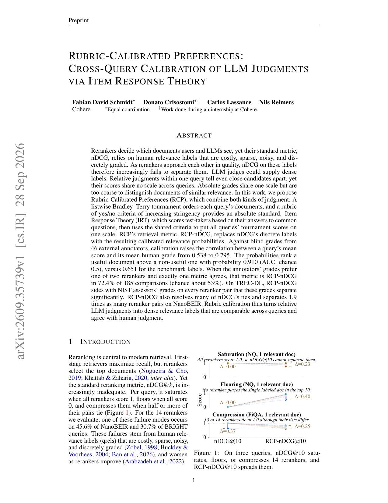
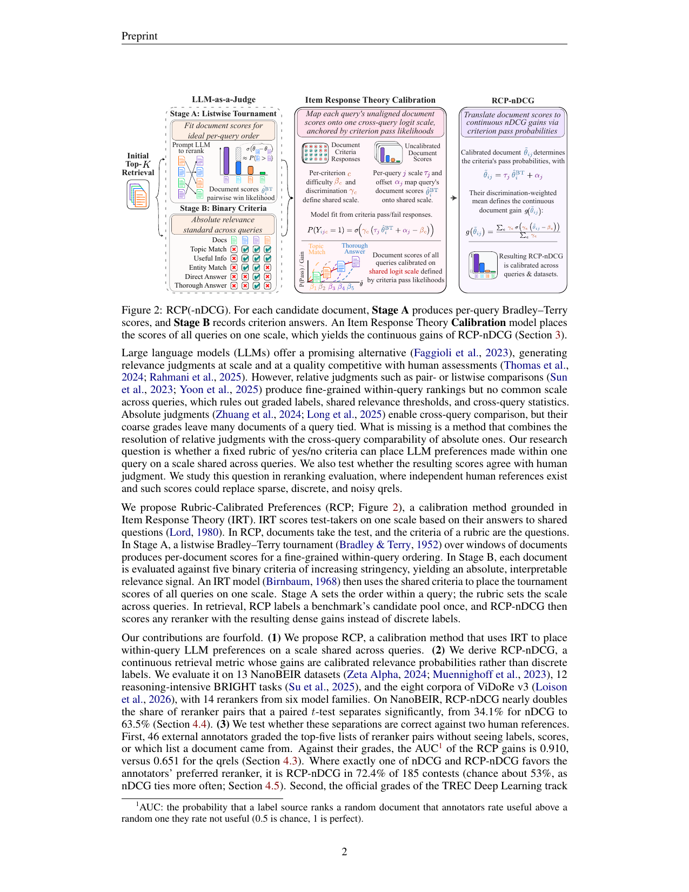
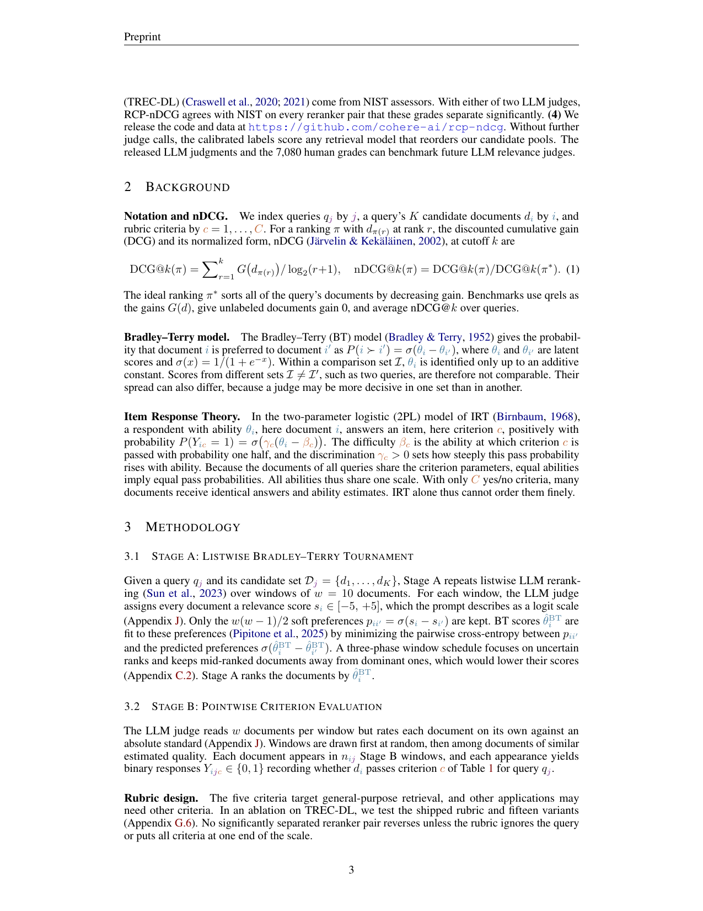

重排器越接近，依赖稀疏离散人工标的 nDCG 越分不开它们；LLM 相对判断能分清接近文档却跨 query 无统一刻度，绝对分又太粗。Cohere 的 Rubric-Calibrated Preferences（RCP）用项目反应理论做跨 query 校准：Stage A listwise Bradley–Terry，Stage B 用量表准则当「考题」。RCP-nDCG 替换离散标：有用/无用 AUC 0.910（基准标签 0.651）；185 次对比里唯一同意方是 RCP-nDCG 占 72.4%；TREC-DL 上每当 NIST 等级可分时都与之同侧。NanoBEIR / BRIGHT 分别有 45.6% / 30.7% query 落在 nDCG 失效模式。重排器评测要从离散 nDCG 换成可跨 query 校准的稠密判断。
1. 问题
nDCG@k 在近并列重排器上饱和、触底或压缩；失败模式在 NanoBEIR 45.6%、BRIGHT 30.7% 的 query 出现。需要稠密、跨 query 共刻度的标签。

2. 方法
RCP：文档当考生，量表准则当题目；IRT 校准到同一能力尺。Stage A 锦标赛式相对比较；Stage B 绝对准则。得到的连续增益代入 nDCG 即 RCP-nDCG。候选池标定一次后可打分任意重排器。

3. 核心贡献
把 LLM 判断从「不可比的相对分」变成「IRT 校准后的共刻度效用」。相对判断的分辨力 + 绝对准则的共刻度，缺一不可。
4. 实验
有用 vs 无用 AUC 0.910 vs 标签 0.651。185 次「仅一指标同意」中 RCP-nDCG 占 72.4%（随机约 53%）。TREC-DL：与 NIST 可分对全部同侧；解很多 nDCG 平局，分离次数约 1.9×。
| 指标 | 数值 |
|---|---|
| 有用判别 AUC | 0.910（标签 0.651） |
| 唯一同意占比 | 72.4% / 185 |
| NanoBEIR nDCG 失效 query | 45.6% |
| BRIGHT 失效 query | 30.7% |

5. 局限
依赖 LLM 裁判与量表设计；标定候选池有成本；对非英语/特殊域准则要重写。
6. 实践意义
重排器迭代接近时，用 RCP-nDCG 替代或并行于 nDCG；先在 TREC-DL 类有 NIST 锚的集合上校准裁判。
补充：数字来自论文实验节与表格；图为 HTML/PDF 原图或页渲染。